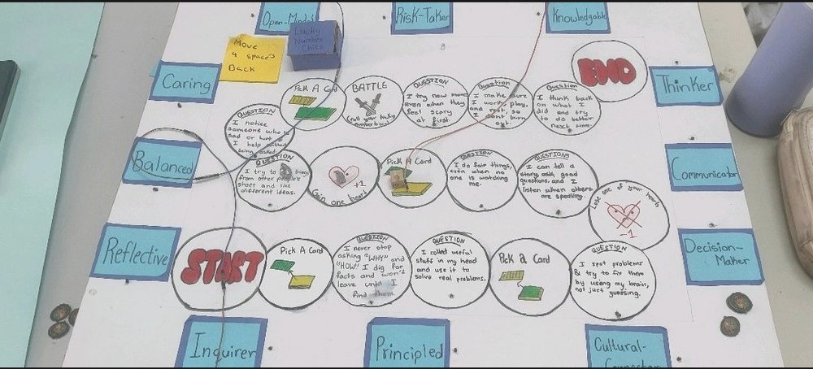
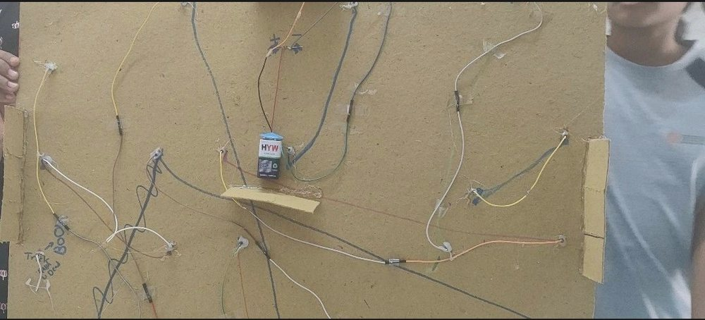

The situation
Authentic learning truly comes alive when learners are able to transfer what they have learned into a new context. This was powerfully evident during our recent MYP Learning Fest.
What happened
Some of our Design students independently applied the skills they had developed in their recent Design unit on electrical board games. They created an entirely new game board centred on the International Baccalaureate Learner Profile. What stood out was not just the final product, but the thinking behind it. Students consciously reused concepts such as circuit planning, user interaction, iteration and testing, without being prompted to do so.


What I learned
For me, this was a strong reminder that meaningful learning is not about completing isolated tasks. It is about building transferable skills, confidence and agency, where students recognise that what they learn in one unit can empower them to solve problems and express ideas in another context altogether.
As an educator, moments like these reaffirm why inquiry-based, skills-driven learning matters. When students take ownership and make connections on their own, learning shifts from being school work to becoming real understanding.
What I am grateful for
Thank you to Sonal Shrivastava, Aprajita Ralli, Malcolm Nicolson and Sreenidhi International School for the chance to witness learning in action.